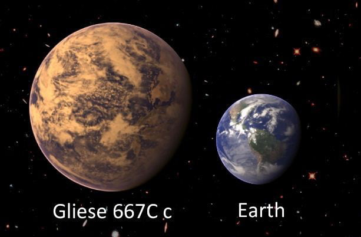
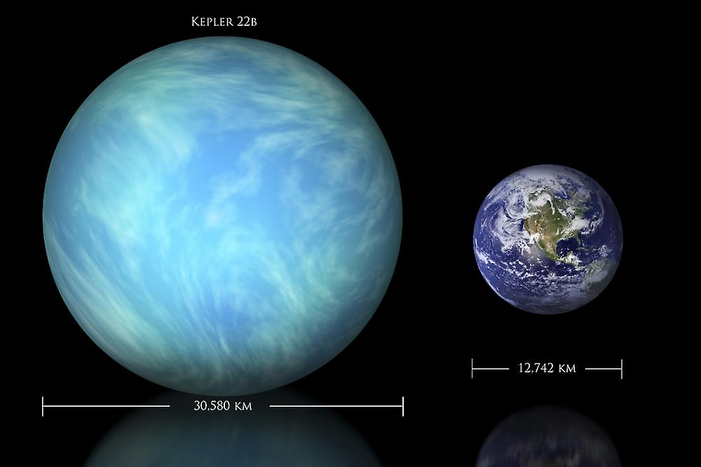
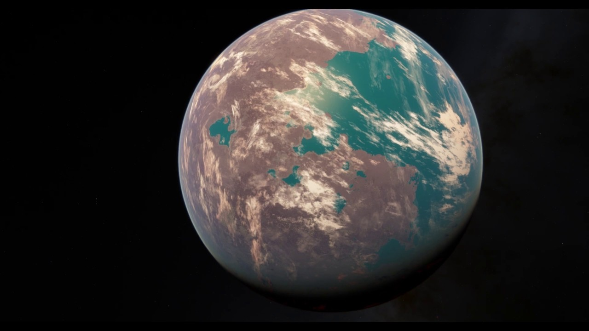
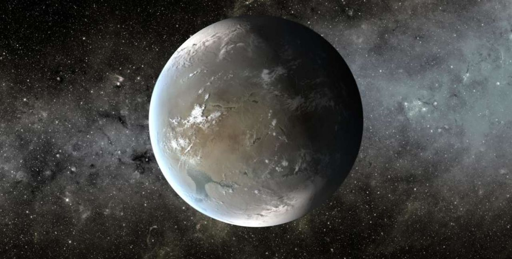
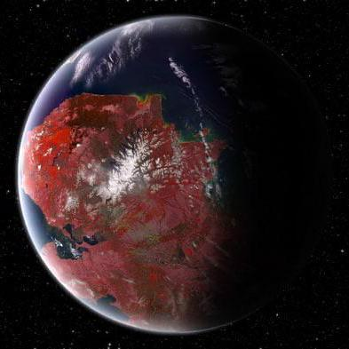
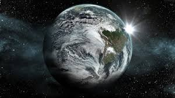
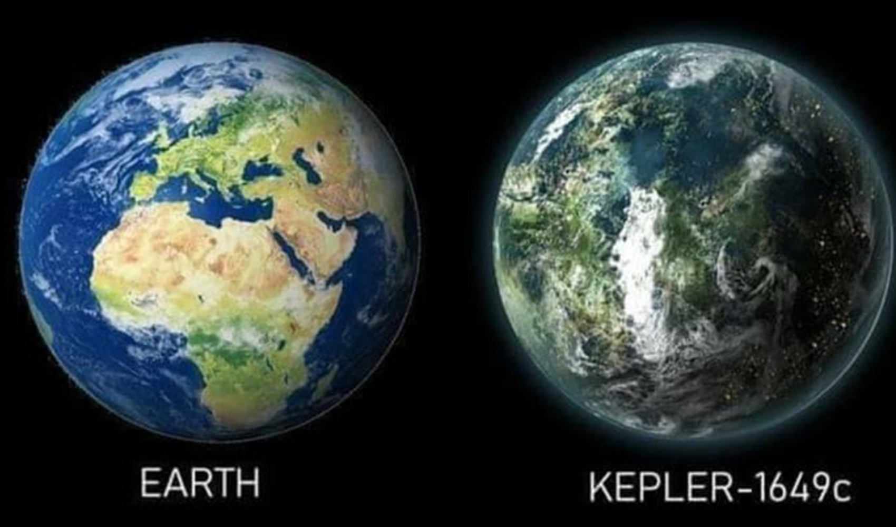
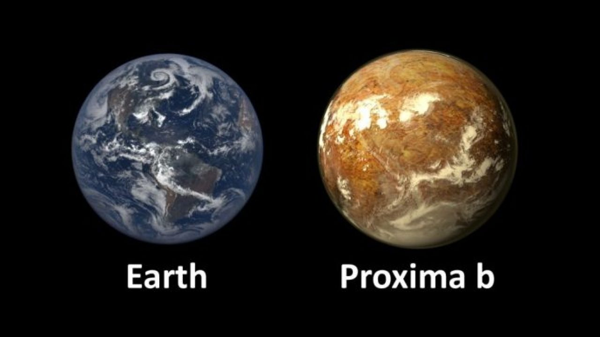
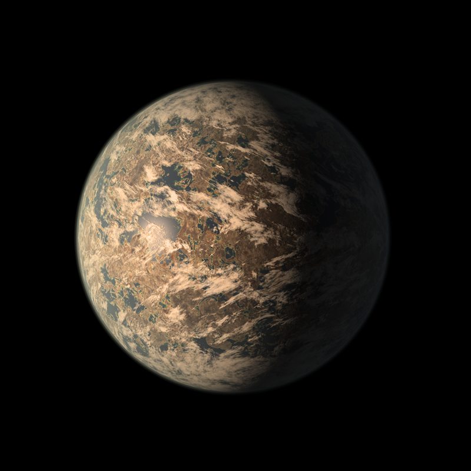

Siblings of Earth
1. GLIESE 667CC
This exoplanet, which lies just 22 light-years from Earth, is at least 4.5 times as massive as Earth, according to NASA's Jet Propulsion Laboratory(opens in new tab). Gliese 667Cc completes one orbit around its host star in a mere 28 days, but that star is a red dwarf considerably cooler than the sun, so the exoplanet is thought to lie in the habitable zone.
However, Gliese 667Cc — which was discovered with the European Southern Observatory's 3.6-meter telescope in Chile — may orbit close enough in to be baked by flares from the red dwarf.
Gliese667Cc compared to Earth

2. KEPLER-22B
Kepler-22b lies 600 light-years away. It was the first Kepler planet found in the habitable zone of its parent star, but the world is considerably larger than Earth — about 2.4 times our planet's size. It's unclear if this "super-Earth" planet is rocky, liquid or gaseous.
Kepler-22b's orbit of 290 days is pretty similar to Earth's 365, Space.com previously reported. The exoplanet orbits a G-class star like our sun, but this star is smaller and colder than Earth's.
Kepler-22b compared to Earth

3. KEPLER-69C
Kepler-69c, which is about 2,700 light-years away, is about 70 percent larger than Earth. So, once again, researchers are unsure about its composition.
The planet completes one orbit every 242 days, making its position within its solar system comparable to that of Venus within ours. However, Kepler-69c's host star is about 80 percent as luminous as the sun, so the planet appears to be in the habitable zone.

4. KEPLER-62F
This planet is about 40 percent larger than Earth and orbits a star much cooler than our sun, according to NASA. Its 267-day orbit, however, puts Kepler-62f squarely within the habitable zone. While Kepler-62 orbits closer to its red dwarf star than Earth does to the sun, the star produces much less light.
Kepler-62f lies about 1,200 light-years away and, due to its large size, is within the range of potentially rocky planets that may hold oceans.

5.Kepler62f.jpg
This planet is at most 10 percent larger than Earth, and it also appears to reside in the habitable zone of its star, though on the zone's outer edge; Kepler-186f receives just one-third of the energy from its star that Earth gets from the sun.
Kepler-186f's parent star is a red dwarf, so the alien world is not a true Earth twin. The planet lies about 500 light-years from Earth.

6. KEPLER-442B
This exoplanet is 33 percent larger than Earth and completes an orbit of its star every 112 days, according to NASA(opens in new tab). The discovery of Kepler-442, situated 1,194 light-years away from Earth, was announced in 2015.
One study, published in the Monthly Notices of the Royal Astronomical Society(opens in new tab) in 2021, found that this exoplanet may receive enough light to sustain a large biosphere. The researchers analysed the likelihood of different planets to be able to carry out photosynthesis. They found that Kepler-442b receives sufficient radiation from its star.

7. KEPLER-452B
This world, whose discovery was announced in 2015, is the first near-Earth-size planet that orbits around a star the size of the sun, according to NASA(opens in new tab). Kepler-452b is 60 percent larger than Earth and its parent star (Kepler-452) is 10 percent larger than the sun. Kepler-452 is very similar to our sun, and the exoplanet orbits in the habitable zone.
At 1.6 times the size of Earth, Kepler-452b has a "better than even chance" of being rocky, its discoverers have said. Kepler-452b resides 1,400 light-years from Earth. It takes Kepler-452b just 20 days longer to orbit its star than Earth does.

8. KEPLER-1649C
When the data from NASA's Kepler space telescope was reanalyzed, scientists discovered Kepler 1649c. The exoplanet was found to be similar in size to Earth and orbiting in its stars habitable zone.
During the initial data collection from the telescope, a computer algorithm misidentified the astronomical body, according to NASA(opens in new tab), but in 2020 it was discovered to be a planet.
Kepler-1649c is located 300 light-years from Earth and is only 1.06 times larger than it. When comparing the light that the two planets receive from their stars, scientists found that this exoplanet receives 75 percent of the light Earth does from the sun.
Kepler-1649c compared to Earth

9. PROXIMA CENTAURI B
Proxima Centauri b is located just four light-years away from Earth, making it Earth's closest known exoplanet, according to NASA Exoplanet Exploration. The exoplanet, which was discovered in 2016, has a mass that is 1.27 times that of Earth's.
Although the exoplanet can be found in the habitable zone of its star, Proxima Centauri, it is exposed to extreme ultraviolet radiation. This is because it lies very close to its parent star and has an orbital period of just 11.2 days.

10. TRAPPIST-1E
Orbiting the star TRAPPIST-1 are the most Earth-sized planets ever discovered in the habitable zone of a single star. This planetary system is made up of seven worlds.
Water on most of these planets are likely to have evaporated early in the system's formation, Space.com previously reported. However, a 2018 study found that some of these planets could hold more water than Earth's oceans. One of the worlds, called TRAPPIST-1e, is thought to be the most likely to support life as we know it.
